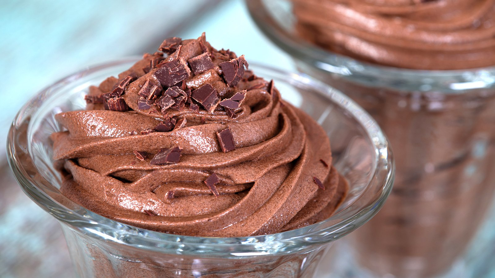

Mohnkuchen

Über das Rezept
Ein Klassiker aus dunkler Schokolade, Sahne und ein bisschen mehr.
Immer lecker und gerne gesehen, absolut zeitlos.
Berechtigt legendär.
Das Rezept
Zutaten
- 200g dunkle Schokolade
- 3 Eier
- 200ml Sahne
- 40g Zucker
- 50g Butter
Arbeitsablauf
- Eier trennen und Eiweiß aufschlagen
- Sahne steif schlagen
- Butter und Schokolade zusammen in einem Wasserbad schmekzen
- Eigelb mit 2 EL heißer Milch aufschlagen und Zucker dazugeben bis Masse hell und cremig ist
- Geschmolzene Schokolade unterheben
- Anschließend sofort Ei und Sahne unterheben
- Mit Folie abdecken und mindestens 2 Stunden kalt stellen
Home